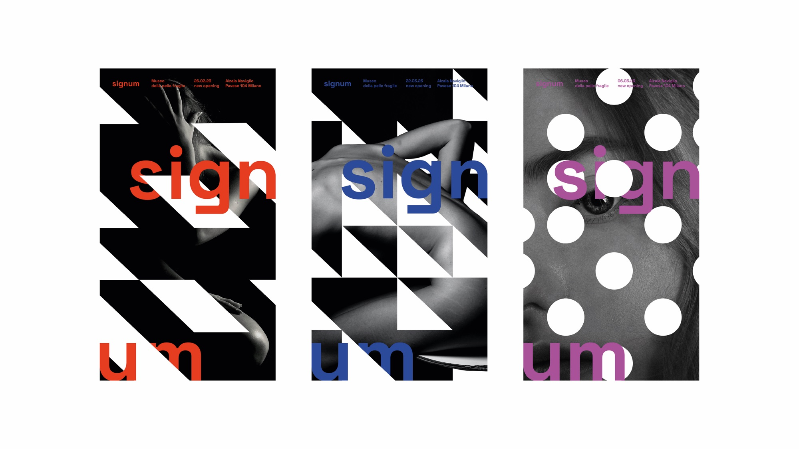
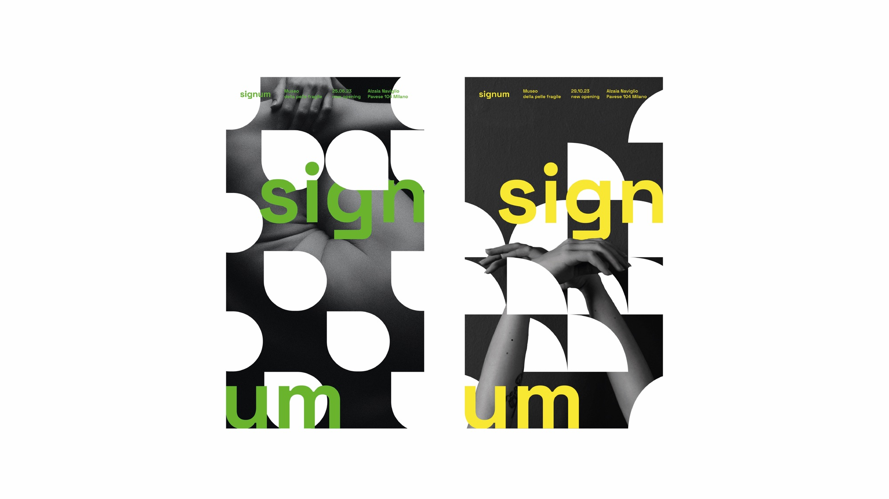
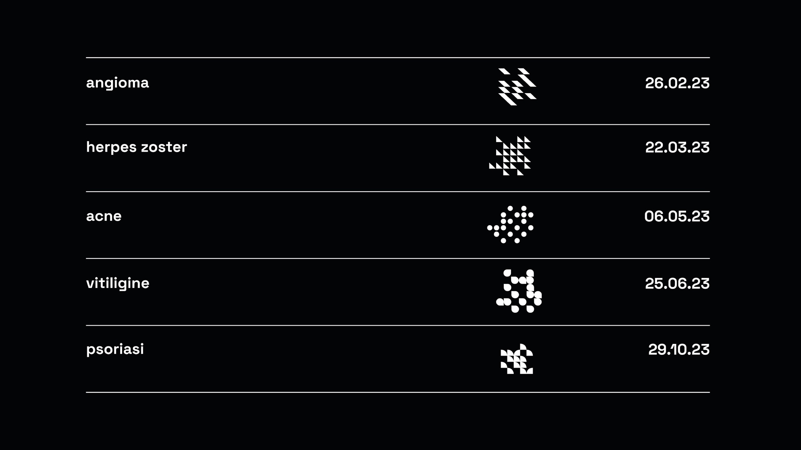
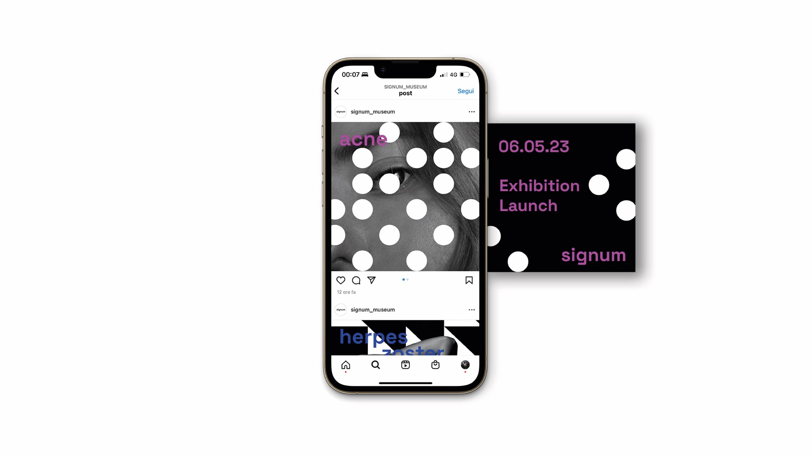
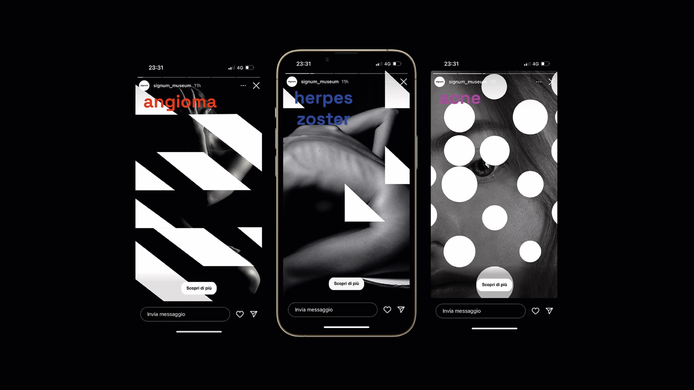

04//
Signum
Visual identity for museo della pelle fragile, a museum where a mark on the skin stops being a flaw and becomes a sign of uniqueness.
concept
Signum (sign + museum) sets out to give value to skin conditions, where the mark turns from a defect into a distinctive trait.
The project explores the emotional and psychological fragility these conditions can bring with them.


pattern system
Patterns are the key element of the museum’s identity: each one is drawn from one of the conditions analysed.

animated posters & communication
In the animated posters each pattern moves following the course of the condition itself, with the sound of a piano as the one constant.
The main communication is built on a calendar of the museum’s new exhibitions, each one opening on the international day of its condition.

